<!DOCTYPE html>
<html xmlns="http://www.w3.org/1999/xhtml" lang="en"></html>
  <head>
    <meta charset="utf-8" />
    <meta name="viewport" content="width=device-width, initial-scale=1.0" />
<title>MËSIMI 1 - Gjithçka që duhet të dini në lidhje me një pajisje Micro:bit-i &#8212; Petlja - Microbit_Al</title>
    <link rel="stylesheet" href="_static/pygments.css" type="text/css" />
    <link rel="stylesheet" href="_static/basic.css" type="text/css" />
    <link rel="stylesheet" type="text/css" href="_static/activecode.css" />
    <link rel="stylesheet" type="text/css" href="_static/codemirror.css" />
    <link rel="stylesheet" type="text/css" href="_static/clickable.css" />
    <link rel="stylesheet" type="text/css" href="_static/pytutor.css" />
    <link rel="stylesheet" type="text/css" href="_static/modal-basic.css" />
    <link rel="stylesheet" type="text/css" href="_static/datafile.css" />
    <link rel="stylesheet" type="text/css" href="_static/dragndrop.css" />
    <link rel="stylesheet" type="text/css" href="_static/fitb.css" />
    <link rel="stylesheet" type="text/css" href="_static/matrixeq.css" />
    <link rel="stylesheet" type="text/css" href="_static/parsons.css" />
    <link rel="stylesheet" type="text/css" href="_static/lib/prettify.css" />
    <link rel="stylesheet" type="text/css" href="_static/poll.css" />
    <link rel="stylesheet" type="text/css" href="_static/showEval.css" />
    <link rel="stylesheet" type="text/css" href="_static/tabbedstuff.css" />
    <link rel="stylesheet" type="text/css" href="https://stackpath.bootstrapcdn.com/bootstrap/4.2.1/css/bootstrap.min.css" />
    <link rel="stylesheet" type="text/css" href="_static/video.css" />
    <link rel="stylesheet" type="text/css" href="_static/webgldemo.css" />
    <link rel="stylesheet" type="text/css" href="_static/webglinteractive.css" />
    <link rel="stylesheet" type="text/css" href="_static/karel.css" />
    <link rel="stylesheet" type="text/css" href="_static/notes.css" />
    <link rel="stylesheet" type="text/css" href="_static/simanim.css" />
    <link rel="stylesheet" type="text/css" href="_static/pycode.css" />
    <link rel="stylesheet" type="text/css" href="_static/p5js.css" />
    <link rel="stylesheet" type="text/css" href="_static/gallery.css" />
    <link rel="stylesheet" type="text/css" href="https://stackpath.bootstrapcdn.com/bootstrap/4.2.1/css/bootstrap.min.css" />
    <link rel="stylesheet" type="text/css" href="_static/video.css" />
    <link rel="stylesheet" href="_static/user-highlights.css" type="text/css" />
    <link rel="stylesheet" href="https://use.fontawesome.com/releases/v5.1.1/css/all.css" type="text/css" />
    <link rel="stylesheet" href="_static/bootstrap-4.0.0-dist/css/bootstrap.min.css" type="text/css" />
    <link rel="stylesheet" href="_static/flatly.min.css" type="text/css" />
    <link rel="stylesheet" href="_static/petlja-runestone.css" type="text/css" />
    <script id="documentation_options" data-url_root="./" src="_static/documentation_options.js"></script>
    <script type="text/javascript" src="_static/runestonebase.js"></script>
    <script type="text/javascript" src="_static/jquery.js"></script>
    <script type="text/javascript" src="_static/underscore.js"></script>
    <script type="text/javascript" src="_static/doctools.js"></script>
    <script type="text/javascript" src="_static/language_data.js"></script>
    <script type="text/javascript" src="_static/jquery.highlight.js"></script>
    <script type="text/javascript" src="_static/bookfuncs.js"></script>
    <script type="text/javascript" src="_static/codemirror.js"></script>
    <script type="text/javascript" src="_static/xml.js"></script>
    <script type="text/javascript" src="_static/css.js"></script>
    <script type="text/javascript" src="_static/python.js"></script>
    <script type="text/javascript" src="_static/htmlmixed.js"></script>
    <script type="text/javascript" src="_static/javascript.js"></script>
    <script type="text/javascript" src="_static/jquery_i18n/CLDRPluralRuleParser.js"></script>
    <script type="text/javascript" src="_static/jquery_i18n/jquery.i18n.js"></script>
    <script type="text/javascript" src="_static/jquery_i18n/jquery.i18n.messagestore.js"></script>
    <script type="text/javascript" src="_static/jquery_i18n/jquery.i18n.fallbacks.js"></script>
    <script type="text/javascript" src="_static/jquery_i18n/jquery.i18n.language.js"></script>
    <script type="text/javascript" src="_static/jquery_i18n/jquery.i18n.parser.js"></script>
    <script type="text/javascript" src="_static/jquery_i18n/jquery.i18n.emitter.js"></script>
    <script type="text/javascript" src="_static/jquery_i18n/jquery.i18n.emitter.bidi.js"></script>
    <script type="text/javascript" src="_static/activecode-i18n.en.js"></script>
    <script type="text/javascript" src="_static/skulpt.min.js"></script>
    <script type="text/javascript" src="_static/skulpt-stdlib.js"></script>
    <script type="text/javascript" src="_static/activecode.js"></script>
    <script type="text/javascript" src="_static/clike.js"></script>
    <script type="text/javascript" src="_static/timed_activecode.js"></script>
    <script type="text/javascript" src="_static/animationbase.js"></script>
    <script type="text/javascript" src="_static/mchoice.js"></script>
    <script type="text/javascript" src="_static/timedmc.js"></script>
    <script type="text/javascript" src="_static/timed.js"></script>
    <script type="text/javascript" src="_static/mchoice-i18n.en.js"></script>
    <script type="text/javascript" src="_static/clickable.js"></script>
    <script type="text/javascript" src="_static/timedclickable.js"></script>
    <script type="text/javascript" src="_static/d3.v2.min.js"></script>
    <script type="text/javascript" src="_static/jquery.ba-bbq.min.js"></script>
    <script type="text/javascript" src="_static/jquery.jsPlumb-1.3.10-all-min.js"></script>
    <script type="text/javascript" src="_static/pytutor.js"></script>
    <script type="text/javascript" src="_static/codelens.js"></script>
    <script type="text/javascript" src="_static/datafile.js"></script>
    <script type="text/javascript" src="_static/dragndrop.js"></script>
    <script type="text/javascript" src="_static/timeddnd.js"></script>
    <script type="text/javascript" src="_static/dragndrop-i18n.en.js"></script>
    <script type="text/javascript" src="_static/fitb.js"></script>
    <script type="text/javascript" src="_static/timedfitb.js"></script>
    <script type="text/javascript" src="_static/fitb-i18n.en.js"></script>
    <script type="text/javascript" src="_static/matrixeq.js"></script>
    <script type="text/javascript" src="_static/lib/prettify.js"></script>
    <script type="text/javascript" src="_static/lib/hammer.min.js"></script>
    <script type="text/javascript" src="_static/parsons.js"></script>
    <script type="text/javascript" src="_static/parsons-i18n.en.js"></script>
    <script type="text/javascript" src="_static/timedparsons.js"></script>
    <script type="text/javascript" src="_static/poll.js"></script>
    <script type="text/javascript" src="_static/reveal.js"></script>
    <script type="text/javascript" src="_static/shortanswer.js"></script>
    <script type="text/javascript" src="_static/timed_shortanswer.js"></script>
    <script type="text/javascript" src="_static/showEval.js"></script>
    <script type="text/javascript" src="_static/tabbedstuff.js"></script>
    <script type="text/javascript" src="_static/runestonevideo.js"></script>
    <script type="text/javascript" src="_static/webglinteractive.js"></script>
    <script type="text/javascript" src="_static/FileSaver.min.js"></script>
    <script type="text/javascript" src="_static/Blob.js"></script>
    <script type="text/javascript" src="_static/karelCorner.js"></script>
    <script type="text/javascript" src="_static/karelRobot.js"></script>
    <script type="text/javascript" src="_static/karelWorld.js"></script>
    <script type="text/javascript" src="_static/karelRobotDrawer.js"></script>
    <script type="text/javascript" src="_static/karelUI.js"></script>
    <script type="text/javascript" src="_static/karel.js"></script>
    <script type="text/javascript" src="_static/karel-i18n.en.js"></script>
    <script type="text/javascript" src="_static/notes.js"></script>
    <script type="text/javascript" src="_static/pygamelib-init.js"></script>
    <script type="text/javascript" src="_static/blockly/blockly_compressed.js"></script>
    <script type="text/javascript" src="_static/blockly/blocks_compressed.js"></script>
    <script type="text/javascript" src="_static/blockly/python_compressed.js"></script>
    <script type="text/javascript" src="_static/blockly/msg-sr.js"></script>
    <script type="text/javascript" src="_static/blockpy/utilities.js"></script>
    <script type="text/javascript" src="_static/blockpy/python_errors.js"></script>
    <script type="text/javascript" src="_static/blockpy/ast_node_visitor.js"></script>
    <script type="text/javascript" src="_static/blockpy/abstract_interpreter.js"></script>
    <script type="text/javascript" src="_static/blockpy/pytifa.js"></script>
    <script type="text/javascript" src="_static/blockpy/abstract_interpreter_definitions.js"></script>
    <script type="text/javascript" src="_static/blockpy/python_to_blockly.js"></script>
    <script type="text/javascript" src="_static/blockpy/imported.js"></script>
    <script type="text/javascript" src="_static/blockpy/blocks/class.js"></script>
    <script type="text/javascript" src="_static/blockpy/blocks/comment.js"></script>
    <script type="text/javascript" src="_static/blockpy/blocks/comprehensions.js"></script>
    <script type="text/javascript" src="_static/blockpy/blocks/dict.js"></script>
    <script type="text/javascript" src="_static/blockpy/blocks/if.js"></script>
    <script type="text/javascript" src="_static/blockpy/blocks/io.js"></script>
    <script type="text/javascript" src="_static/blockpy/blocks/lists.js"></script>
    <script type="text/javascript" src="_static/blockpy/blocks/sets.js"></script>
    <script type="text/javascript" src="_static/blockpy/blocks/loops.js"></script>
    <script type="text/javascript" src="_static/blockpy/blocks/parking.js"></script>
    <script type="text/javascript" src="_static/blockpy/blocks/tuple.js"></script>
    <script type="text/javascript" src="_static/blockpy/blocks/turtles.js"></script>
    <script type="text/javascript" src="_static/blockpy/blocks/text.js"></script>
    <script type="text/javascript" src="_static/blockpy-modal.js"></script>
    <script type="text/javascript" src="_static/simanim.js"></script>
    <script type="text/javascript" src="https://cdn.jsdelivr.net/pyodide/v0.16.1/full/pyodide.js"></script>
    <script type="text/javascript" src="_static/pycode.js"></script>
    <script type="text/javascript" src="//toolness.github.io/p5.js-widget/p5-widget.js"></script>
    <script type="text/javascript" src="_static/p5js.js"></script>
    <script type="text/javascript" src="_static/gallery.js"></script>
    <script type="text/javascript" src="_static/petljavideo.js"></script>
    <script type="text/javascript" src="_static/mchoice-i18n.sr-Cyrl.js"></script>
    <script type="text/javascript" src="_static/mchoice-i18n.sr.js"></script>
    <script type="text/javascript" src="_static/mchoice-i18n.sr-Latn.js"></script>
    <script type="text/javascript" src="_static/dragndrop-i18n.sr-Cyrl.js"></script>
    <script type="text/javascript" src="_static/dragndrop-i18n.sr.js"></script>
    <script type="text/javascript" src="_static/dragndrop-i18n.sr-Latn.js"></script>
    <script type="text/javascript" src="_static/fitb-i18n.sr-Cyrl.js"></script>
    <script type="text/javascript" src="_static/fitb-i18n.sr.js"></script>
    <script type="text/javascript" src="_static/fitb-i18n.sr-Latn.js"></script>
    <script type="text/javascript" src="_static/parsons-i18n.sr-Cyrl.js"></script>
    <script type="text/javascript" src="_static/parsons-i18n.sr.js"></script>
    <script type="text/javascript" src="_static/parsons-i18n.sr-Latn.js"></script>
    <script type="text/javascript" src="_static/activecode-i18n.sr-Cyrl.js"></script>
    <script type="text/javascript" src="_static/activecode-i18n.sr.js"></script>
    <script type="text/javascript" src="_static/activecode-i18n.sr-Latn.js"></script>
    <script type="text/javascript" src="_static/jquery-ui-1.10.3.custom.min.js"></script>
    <script type="text/javascript" src="_static/jquery-fix.js"></script>
    <script type="text/javascript" src="_static/bootstrap-4.0.0-dist/js/bootstrap.min.js"></script>
    <script type="text/javascript" src="_static/bootstrap-4.0.0-dist/js/bootstrap.bundle.min.js"></script>
    <script type="text/javascript" src="_static/bootstrap-sphinx.js"></script>
    <script type="text/javascript" src="_static/waypoints.min.js"></script>
    <script type="text/javascript" src="_static/rangy-core.js"></script>
    <script type="text/javascript" src="_static/rangy-textrange.js"></script>
    <script type="text/javascript" src="_static/rangy-cssclassapplier.js"></script>
    <script type="text/javascript" src="_static/user-highlights.js"></script>
    <script type="text/javascript" src="_static/jquery.idle-timer.js"></script>
    <script type="text/javascript" src="_static/processing-1.4.1.min.js"></script>
    <script type="text/javascript" src="_static/jquery.hotkey.js"></script>
    <script type="text/javascript" src="_static/jquery-migrate-1.2.1.min.js"></script>
    <link rel="index" title="Index" href="genindex.html" />
    <link rel="search" title="Search" href="search.html" />
    <link rel="next" title="Mësimi 2 - Ambienti i punës MakeCode" href="Час 2 - Радно окружење МејкКода.html" />
    <link rel="prev" title="Програмирање микробит уређаја у МејкКоду – приручник за пети разред" href="index.html" />
<meta charset='utf-8'>
<meta http-equiv='X-UA-Compatible' content='IE=edge,chrome=1'>
<meta content='width=device-width, initial-scale=1.0, maximum-scale=1.0, user-scalable=0' name='viewport' />
<link rel="shortcut icon" href="_static/favicon.ico" type="image/ico" />

<script type="text/javascript">
  eBookConfig = {};
  eBookConfig.host = 'http://127.0.0.1:8000' ? 'http://127.0.0.1:8000' : 'http://127.0.0.1:8000';
  eBookConfig.app = eBookConfig.host + '/runestone';
  eBookConfig.ajaxURL = eBookConfig.app + '/ajax/';
  eBookConfig.course = 'Microbit_Al';
  eBookConfig.logLevel = '0';
  eBookConfig.loginRequired = 'false';
  eBookConfig.build_info = "";
  eBookConfig.isLoggedIn = false;
  eBookConfig.useRunestoneServices = 'false';
  eBookConfig.python3 = 'true';
  eBookConfig.basecourse = 'Microbit_Al';
  eBookConfig.runestone_version = '';
  eBookConfig.imagesDir = '_images/';
  eBookConfig.staticDir = '_static/';
  if(typeof(Sk) != "undefined")
      Sk.imgPath = eBookConfig.imagesDir;
</script>

<div id="fb-root"></div>


  </head><body>


<!-- Begin navbar -->

<nav id="navbar" class="navbar navbar-default navbar-fixed-top" role="navigation">

  <div class="container">

    <div class="navbar-header">
      <button type="button" class="navbar-toggle collapsed" data-toggle="collapse" data-target="#bs-example-navbar-collapse-1">
        <span class="sr-only">Toggle navigation</span>
        <span class="icon-bar"></span>
        <span class="icon-bar"></span>
        <span class="icon-bar"></span>
      </button>
      
    </div>

    <div class="collapse navbar-collapse" id="bs-example-navbar-collapse-1" style="margin-top: 10px; margin-left: 25px;">
      <ul class="nav navbar-nav">
        <li class="active"><a href="./">Petlja - Microbit_Al</a></li>
      </ul>
    </div>
  </div>
</nav>


<div class="container col-md-12" id="continue-reading"></div>

<div class="container col-md-8 col-md-offset-2" id="main-content" style="margin-top: 70px;">
  
  <div class="section" id="mesimi-1-gjithcka-qe-duhet-te-dini-ne-lidhje-me-nje-pajisje-micro-bit-i">
<h1>MËSIMI 1 - Gjithçka që duhet të dini në lidhje me një pajisje Micro:bit-i<a class="headerlink" href="#mesimi-1-gjithcka-qe-duhet-te-dini-ne-lidhje-me-nje-pajisje-micro-bit-i" title="Permalink to this headline">¶</a></h1>
<p>Në këtë mësim do të flasim në lidhje me:­</p>
<ul class="simple">
<li><p>karakteristikat bazë të pajisjes Micro:bit;</p></li>
<li><p>përbërësit individualë të pajisjes Micro:bit.</p></li>
</ul>
<p>Micro:bit-i është një pajisje me origjinë nga Mbretëria e Bashkuar. Është krijuar nga BBC-ja (British Broadcasting Corporation), Microsoft-i dhe kompani të tjera, në mënyrë që të promovojë teknologjinë e informacionit tek grupmoshat më të reja. Përveç nxënies së bazave të programimit, nxënësit mund të zotërojnë edhe bazat e shkencave teknike duke përdorur pajisjen Micro:bit. Duke përdorur një pajisje Micro:bit-i me përbërës shtesë, është e mundur të krijoni pajisjen tuaj e cila shfaq të dhëna reale që mund të përdoren për analiza dhe më pas, për të zgjidhur një problem real, p.sh. monitorimin e temperaturës në dhomë dhe marrjen e vendimit se ku do të vendosen kondicionerët në ndërtesë…</p>
<p><strong>Le të kujtojmë.</strong> Kompjuteri përbëhet nga 4 përbërës kryesorë:</p>
<a class="reference internal image-reference" href="_images/1.png">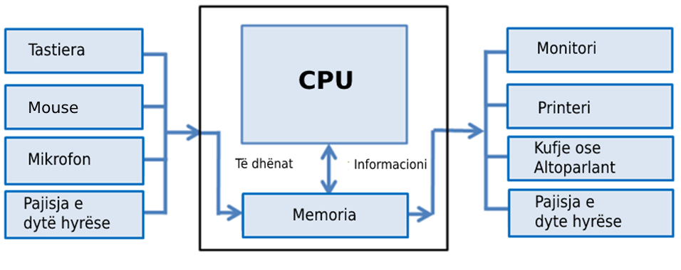</a>
<p>CPU-ja është një pajisje që përpunon dhe transformon të dhënat. Memoria është një pajisje në të cilën ruhen të dhënat, në çast ose përgjithmonë. Duke përdorur pajisjet e hyrjes, kompjuteri merr informacion (tastierë, maus), ndërsa duke përdorur pajisjet dalëse, informacioni shfaqet ose transmetohet (monitor, printer,).</p>
<p>Tani, le ta shohim nga afër pajisjen Micro:bit.</p>
<p><strong>Micro:bit-i</strong> është një pajisje që ka një procesor 32-bit, sensorë dhe një ekran të përbërë nga 25 dioda LED. Ka pesë konektorë, hyrës dhe dalës  (I / O) që përdoren për të lidhur pajisjet Micro:bit me pajisje ose sensorë të tjerë, ka pajisje Bluetooth dhe ushqehet nga dy bateri AA. Dhe, më e rëndësishmja - Micro:bit-i mund të programohet.</p>
<a class="reference internal image-reference" href="_images/2.png">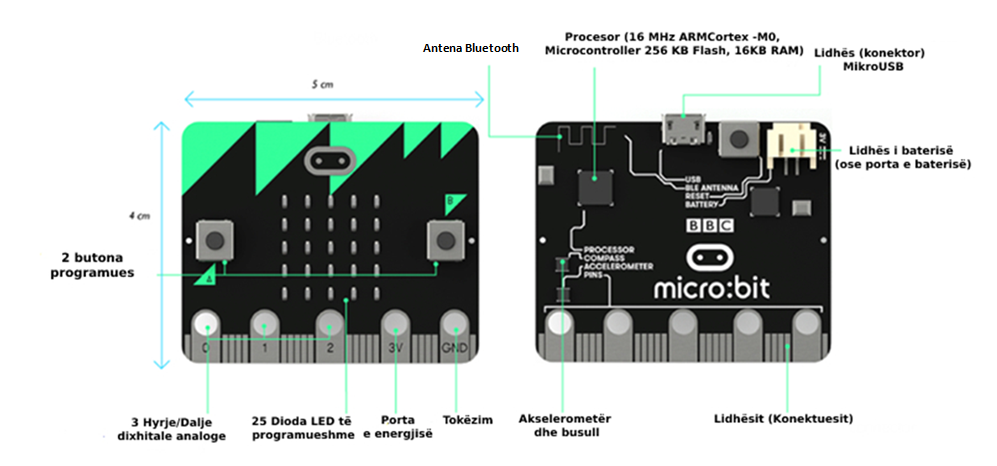</a>
<p>Pajisja Micro:bit përbëhet nga përbërësit e mëposhtëm fizikë:</p>
<ul class="simple">
<li><p>25 dioda LED të programueshme individualisht,</p></li>
<li><p>2 çelësa të programueshëm, të shënuar A dhe B,</p></li>
<li><p>kunjat,</p></li>
<li><p>sensorë të temperaturës dhe dritës,</p></li>
<li><p>sensorë lëvizjeje (akselerometër dhe busull),</p></li>
<li><p>komunikim pa tel përmes radios dhe Bluetooth-it,</p></li>
<li><p>Porta USB,</p></li>
<li><p>butoni i rikonfigurimit.</p></li>
</ul>
<table class="colwidths-given docutils align-default" id="id1">
<caption><span class="caption-text">Tabela e përmbajtjes e pajisjes Micro-bit</span><a class="headerlink" href="#id1" title="Permalink to this table">¶</a></caption>
<colgroup>
<col style="width: 50%" />
<col style="width: 50%" />
</colgroup>
<thead>
<tr class="row-odd"><th class="head"><p>Emri i përbërësit:</p></th>
<th class="head"><p>Funksioni:</p></th>
</tr>
</thead>
<tbody>
<tr class="row-even"><td><p><a class="reference internal" href="_images/3.png">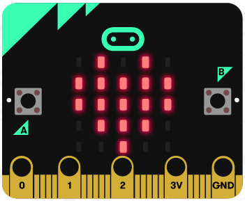</a></p></td>
<td><p><strong>LED (LightEmitting Diode)</strong> janë dioda që emetojnë dritë. Micro:bit-i ka 25 LED (të vendosura në një rrjet 5x5) që mund të programohen individualisht dhe të cilat, në varësi të programit, mund të shfaqin tekst specifik, numra, figura.</p></td>
</tr>
<tr class="row-odd"><td><p><a class="reference internal" href="_images/4.png">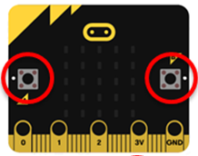</a> <a class="reference internal" href="_images/5.png">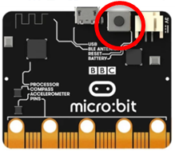</a></p></td>
<td><p>Ekzistojnë dy butona (butona) në pjesën e përparme të Micro:bit-it (shënuar A dhe B). Shtypja e secilit buton individualisht, ose shtypja e të dy butonave në të njëjtën kohë, shkakton nisjen e programit në pajisje. Ekziston një buton tjetër në pjesën e pasme të Micro:bit-it që ju lejon të rindizni (rivendosni) programin e ngarkuar.</p></td>
</tr>
<tr class="row-even"><td><p><a class="reference internal" href="_images/6.png">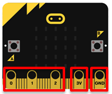</a></p></td>
<td><p>Micro:bit-i ka 25 kunja - 5 të mëdha dhe 20 të vogla. Pesë kunjat e mëdha janë shënuar me 0, 1, 2, 3V dhe GND. Kunjat 0, 1 dhe 2 janë kunjat e qëllimit të përgjithshëm të input-output-it. Nëpërmjet tyre, mund të lidhim sensorë të ndryshëm shtesë me Micro:bit-in dhe, gjithashtu, të kontrollojmë disa pajisje njëkohësisht. Kunjat 3V dhe GND (tokë - tokë) përdoren për furnizimin me energji elektrike. Shënim: Edhe pse është shënuar me 3V, në daljen e kësaj kunje, marrim një tension të lidhjes me tokën 3.3V.</p></td>
</tr>
<tr class="row-odd"><td><p><a class="reference internal" href="_images/7.png"></a></p></td>
<td><p>Diodat LED janë të vendosura në pjesën e përparme të Micro:bit-it. Në këtë rast, ato luajnë rolin e një pajisjeje hyrëse. Ekrani LED funksionon si një sensor i thjeshtë i dritës i cili tregon intensitetin e dritës në mjedis.</p></td>
</tr>
<tr class="row-even"><td><p><a class="reference internal" href="_images/8.png">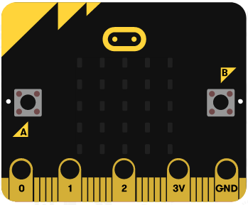</a></p></td>
<td><p>Nuk ka një sensor të veçantë të temperaturës të integruar në Micro:bit, por është i mundur përdorimi i një sensori që mat temperaturën e procesorit të tij. Ky sensor lejon që Micro:bit-i të tregojë temperaturën aktuale të ambientit, në gradë Celsius.</p></td>
</tr>
<tr class="row-odd"><td><p><a class="reference internal" href="_images/9.png">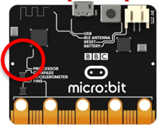</a></p></td>
<td><p>Akselerometër - është një përbërës që regjistron lëvizjet, d.m.th. ndryshimin e shpejtësisë dhe pozicionit, d.m.th. mund të masë shpejtësinë e lëvizjes. Me këtë përbërës mund të regjistroheni kur lëvizni Micro:bit-in. Gjithashtu mund të zbulohen aktivitete të tjera, të tilla si dridhja, animi ose rënia e lirë.</p></td>
</tr>
<tr class="row-even"><td><p><a class="reference internal" href="_images/10.png">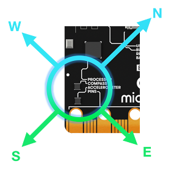</a></p></td>
<td><p>Busulla zbulon fushën magnetike të Tokës, e cila na jep aftësinë të përcaktojmë drejtimin përballë të cilit është Micro:bit-i. Busulla duhet të kalibrohet para përdorimit. “Kalibrimi” i busullës jep rezultate të sakta të leximit të drejtuar. Kur fillon kalibrimi, Micro:bit-i do të shfaqë udhëzime në ekran - “Vizato një rreth” ose “Ano për të mbushur ekranin”. Kështu që ne do ta zhvendosim pikën në qendër të ekranit, duke lëvizur pajisjen, derisa të shtypet skica e rrethit ose deri sa i gjithë ekrani të mbushet me pika.</p></td>
</tr>
<tr class="row-odd"><td><p><a class="reference internal" href="_images/11.png">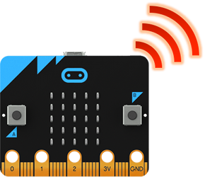</a></p></td>
<td><p>Përbërësi i radios lejon komunikimin pa tel ndërmjet dy ose më shumë Micro:bite-ve. Ne mund të përdorim radion për të shkëmbyer mesazhe me Micro:bit-e të tjerë, për të  krijuar lojëra ose teste për shumë lojtarë etj.</p></td>
</tr>
<tr class="row-even"><td><p><a class="reference internal" href="_images/12.png">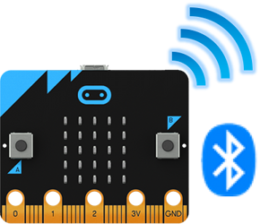</a></p></td>
<td><p>Antena BLE (Bluetooth me energji të ulët) lejon që Micro:bit-i të dërgojë dhe marrë sinjale Bluetooth-i, pra të komunikojë pa tel me kompjutera, celularë dhe tableta.</p></td>
</tr>
<tr class="row-odd"><td><p><a class="reference internal" href="_images/13.png">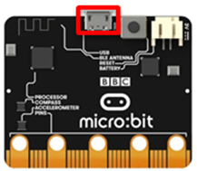</a></p></td>
<td><p>Porta USB na lejon ta lidhim Micro:bit-in me kompjuterin nëpërmjet një kablloje mikro-USB, e cila do ta furnizojë me energji pajisjen dhe do të na lejojë të shkarkojmë kodet e programit në të.</p></td>
</tr>
</tbody>
</table>

    <div class="course-box course-box-info">
        <div class="course-content">
            <p>
<dl class="simple">
<dt><strong>Çfarë kemi mësuar?</strong></dt><dd><ul class="simple">
<li><p>pajisja Micro:bit është krijuar për të mësuar bazat e programimit;</p></li>
<li><p>mund të quhet mini-kompjuter;</p></li>
<li><p>pajisja Micro:bit ka një ekran të përbërë nga 25 dioda LED;</p></li>
<li><p>këto 25 dioda luajnë rolin e pajisjes hyrëse dhe dalëse dhe mund të programohen individualisht;</p></li>
<li><p>pajisja Micro:bit ka 3 çelësa, çelësat A dhe B mund të programohen dhe janë të vendosur në pjesën e përparme të Micro:bit, dhe një buton rikonfigurimi të vendosur në mes të pajisjes;</p></li>
<li><p>pajisja Micro:bit ka lidhje (kunja) që përdoren për tu lidhur me pajisje të tjera (sensorë, motorë);</p></li>
<li><p>pajisja Micro:bit mund të masë temperaturën, intensitetin e dritës, shpejtësinë dhe të shërbejë si busull;</p></li>
<li><p>pajisja Micro:bit mund të komunikojë me pajisje të tjera duke përdorur komunikimin pa tel nëpërmjet Bluetooth-it;</p></li>
<li><p>ka tre mënyra për të furnizuar me energji një pajisje Micro:bit-i: duke përdorur një lidhës baterie, duke përdorur një kunj 3V, ose duke u lidhur me një kompjuter nëpërmjet një porte USB.</p></li>
</ul>
</dd>
</dl>

    </p></div></div>
<div class="section" id="test">
<h2>Test<a class="headerlink" href="#test" title="Permalink to this headline">¶</a></h2>

            <div class="course-box course-box-question course-content">
            <ul data-component="multiplechoice" data-multipleanswers="false"  id="L1P1">
            <p>Q-1: Sa dioda LED ndodhen në pjesën e përparme të Micro:bit-it? (Zgjidhni një nga përgjigjet më poshtë).</p>

            <li data-component="answer"  id="L1P1_opt_a">15</li><li data-component="feedback" id="L1P1_opt_a">Përgjigja juaj nuk është e saktë. Provoni përsëri! Kthehuni dhe shikoni pjesën e mësimit që shpjegon numrin e diodave LED në ekranin e Micro:bit-it.</li>
            
            <li data-component="answer"  id="L1P1_opt_b">21</li><li data-component="feedback" id="L1P1_opt_b">Përgjigja juaj nuk është e saktë. Provoni përsëri! Kthehuni dhe shikoni pjesën e mësimit që shpjegon numrin e diodave LED në ekranin e Micro:bit-it.</li>
            
            <li data-component="answer"  id="L1P1_opt_c">23</li><li data-component="feedback" id="L1P1_opt_c">Përgjigja juaj nuk është e saktë. Provoni përsëri! Kthehuni dhe shikoni pjesën e mësimit që shpjegon numrin e diodave LED në ekranin e Micro:bit-it.</li>
            
            <li data-component="answer" data-correct id="L1P1_opt_d">25</li><li data-component="feedback" id="L1P1_opt_d">Ju lumtë! Përgjigja juaj është e saktë. Në ekranin e Micro:bit-it ka 25 dioda LED të vendosura  në një rrjet 5x5.</li>
            

            </ul>
            </div>
            
            <div class="course-box course-box-question course-content">
            <ul data-component="multiplechoice" data-multipleanswers="false"  id="L1P2">
            <p>Q-2: Cili përbërës i Micro:bit-it lejon detektimin e lëvizjes?(Zgjidhni një nga përgjigjet më poshtë ).</p>

            <li data-component="answer"  id="L1P2_opt_a">Busulla</li><li data-component="feedback" id="L1P2_opt_a">Përgjigja juaj nuk është e saktë. Provoni përsëri! Kthehuni dhe shikoni pjesën e mësimit që shpjegon sensorin e lëvizjes.</li>
            
            <li data-component="answer" data-correct id="L1P2_opt_b">Akselerometër</li><li data-component="feedback" id="L1P2_opt_b">Ju lumtë! Përgjigja juaj është e saktë. Me ndihmën e një akselerometri, është e mundur të regjistroheni kur lëviz Micro:bit-i. Gjithashtu është  e mundur të detektohen aktivitete të tjera, të tilla si vibrimi (dridhja) , animi ose rënia e lirë.</li>
            
            <li data-component="answer"  id="L1P2_opt_c">Ram</li><li data-component="feedback" id="L1P2_opt_c">Përgjigja juaj nuk është e saktë. Provoni përsëri! Kthehuni dhe shikoni pjesën e mësimit që shpjegon sensorin e lëvizjes.</li>
            
            <li data-component="answer"  id="L1P2_opt_d">Bluetooth</li><li data-component="feedback" id="L1P2_opt_d">Përgjigja juaj nuk është e saktë. Provoni përsëri! Kthehuni dhe shikoni pjesën e mësimit që shpjegon sensorin e lëvizjes.</li>
            

            </ul>
            </div>
            
            <div class="course-box course-box-question course-content">
            <ul data-component="multiplechoice" data-multipleanswers="false"  id="L1P3">
            <p>Q-3: Cili është roli i busullave në Micro:bit? (Zgjidhni një nga përgjigjet më poshtë ).</p>

            <li data-component="answer"  id="L1P3_opt_a">Detekton Dritën</li><li data-component="feedback" id="L1P3_opt_a">Përgjigja juaj nuk është e saktë. Provoni përsëri! Kthehuni dhe shikoni pjesën e mësimit që shpjegon busullën.</li>
            
            <li data-component="answer"  id="L1P3_opt_b">. Detekton Temperaturën</li><li data-component="feedback" id="L1P3_opt_b">Përgjigja juaj nuk është e saktë. Provoni përsëri! Kthehuni dhe shikoni pjesën e mësimit që shpjegon busullën.</li>
            
            <li data-component="answer" data-correct id="L1P3_opt_c">Detekton fuqinë e fushës Magnetike</li><li data-component="feedback" id="L1P3_opt_c">Ju lumtë! Përgjigja juaj është e saktë. Busulla detekton fushën magnetike të Tokës, e cila na jep mundësinë të përcaktojmë drejtimin në të cilin ndodhet Micro:bit-i.</li>
            
            <li data-component="answer"  id="L1P3_opt_d">Detekton Lëvizjen</li><li data-component="feedback" id="L1P3_opt_d">Përgjigja juaj nuk është e saktë. Provoni përsëri! Kthehuni dhe shikoni pjesën e mësimit që shpjegon busullën.</li>
            

            </ul>
            </div>
            
            <div class="course-box course-box-question course-content">
            <ul data-component="multiplechoice" data-multipleanswers="false"  id="L1P4">
            <p>Q-4: Sa çelësa ka një Micro:bit? (Zgjidhni një nga përgjigjet më poshtë ).</p>

            <li data-component="answer"  id="L1P4_opt_a">2</li><li data-component="feedback" id="L1P4_opt_a">Përgjigja juaj nuk është e saktë. Provoni përsëri! Kthehuni dhe shikoni pjesën e mësimit që shpjegon tastierën e Micro:bit-it.</li>
            
            <li data-component="answer"  id="L1P4_opt_b">1</li><li data-component="feedback" id="L1P4_opt_b">Përgjigja juaj nuk është e saktë. Provoni përsëri! Kthehuni dhe shikoni pjesën e mësimit që shpjegon tastierën e Micro:bit-it.</li>
            
            <li data-component="answer" data-correct id="L1P4_opt_c">3</li><li data-component="feedback" id="L1P4_opt_c">Ju lumtë! Përgjigja juaj është e saktë. Ekzistojnë dy butona (butona) në pjesën e përparme të Micro:bit-it (shënuar A dhe B), dhe në pjesën e pasme të Micro:bit-it ekziston një buton tjetër që ju lejon të rikonfiguroni programin e ngarkuar</li>
            
            <li data-component="answer"  id="L1P4_opt_d">4</li><li data-component="feedback" id="L1P4_opt_d">Përgjigja juaj nuk është e saktë. Provoni përsëri! Kthehuni dhe shikoni pjesën e mësimit që shpjegon tastierën e Micro:bit-it.</li>
            

            </ul>
            </div>
            
            <div class="course-box course-box-question course-content">
            <ul data-component="multiplechoice" data-multipleanswers="false"  id="L1P5">
            <p>Q-5: Cili është roli i diodave LED në një Micro:bit?(Zgjidhni një nga përgjigjet më poshtë ).</p>

            <li data-component="answer" data-correct id="L1P5_opt_a">Detekton dritën</li><li data-component="feedback" id="L1P5_opt_a">Ju lumtë! Përgjigja juaj është e saktë. Diodat  LED në ekran funksionojnë si një sensor i thjeshtë i dritës që detekton intensitetin e dritës në mjedis.</li>
            
            <li data-component="answer"  id="L1P5_opt_b">Detekton temperaturën</li><li data-component="feedback" id="L1P5_opt_b">Përgjigja juaj nuk është e saktë. Provoni përsëri! Kthehuni dhe shikoni pjesën e mësimit që shpjegon detektimin e dritës.</li>
            
            <li data-component="answer"  id="L1P5_opt_c">Detekton ndryshimin e shpejtësisë</li><li data-component="feedback" id="L1P5_opt_c">Përgjigja juaj nuk është e saktë. Provoni përsëri! Kthehuni dhe shikoni pjesën e mësimit që shpjegon detektimin e dritës.</li>
            
            <li data-component="answer"  id="L1P5_opt_d">Detekton fuqinë e fushës magnetike</li><li data-component="feedback" id="L1P5_opt_d">Përgjigja juaj nuk është e saktë. Provoni përsëri! Kthehuni dhe shikoni pjesën e mësimit që shpjegon detektimin e dritës.</li>
            

            </ul>
            </div>
            </div>
</div>


  
      <div class="col-md-12">
<ul class="pager">
        <li id="relations-prev" title='Previous chapter - Програмирање микробит уређаја у МејкКоду – приручник за пети разред' data-toggle="tooltip"><a href="index.html">kapitulli i mëparshëm</a></li>
    
        <li id="relations-next" title='Next chapter - Mësimi 2 - Ambienti i punës MakeCode' data-toggle="tooltip"><a href="Час 2 - Радно окружење МејкКода.html">Kapitulli tjetër</a></li>
</ul>

<!-- <ul class="pager"> -->
    <!-- -->
        <!-- <li id="relations-prev" title='Претходно поглавље - Програмирање микробит уређаја у МејкКоду – приручник за пети разред' data-toggle="tooltip"><a href="index.html">Претходно поглавље</a></li> -->
    <!--  -->
    <!-- -->
        <!-- <li id="relations-next" title='Следеће поглавље - Mësimi 2 - Ambienti i punës MakeCode' data-toggle="tooltip"><a href="Час 2 - Радно окружење МејкКода.html">Следеће поглавље</a></li> -->
    <!-- -->
<!-- </ul> -->

<script type="text/javascript">

  $('#relations-prev').tooltip({'placement':'right', 'selector': '', 'delay': { show: 100, hide: 50}});
  $('#relations-next').tooltip({'placement':'left', 'selector': '', 'delay': { show: 100, hide: 50}});

</script>
</div>
  
</div>
<footer class="footer col-md-12">
    <div class="container">
        <div class="text-center">
            <hr>
            <p class="text-muted">
                <span class="pull-left">&copy; 2021 British Council (Created using  <a href="https://pypi.org/project/Sphinx/">Swinx</a>, <a href="http://runestoneinteractive.org/">RunestoneComponents</a> and <a href="https://github.com/Petlja/PetljaDoc">PetljaDoc</a>)</span>
            </p>
        </div>
    </div>
</footer>


<script type="text/javascript">
  var _gaq = _gaq || [];
  _gaq.push(['_setAccount', 'UA-32029811-1']);
  _gaq.push(['_trackPageview']);

  (function() {
    var ga = document.createElement('script'); ga.type = 'text/javascript'; ga.async = true;
    ga.src = ('https:' == document.location.protocol ? 'https://ssl' : 'http://www') + '.google-analytics.com/ga.js';
    var s = document.getElementsByTagName('script')[0]; s.parentNode.insertBefore(ga, s);
  })();
</script>


  </body>
</html>